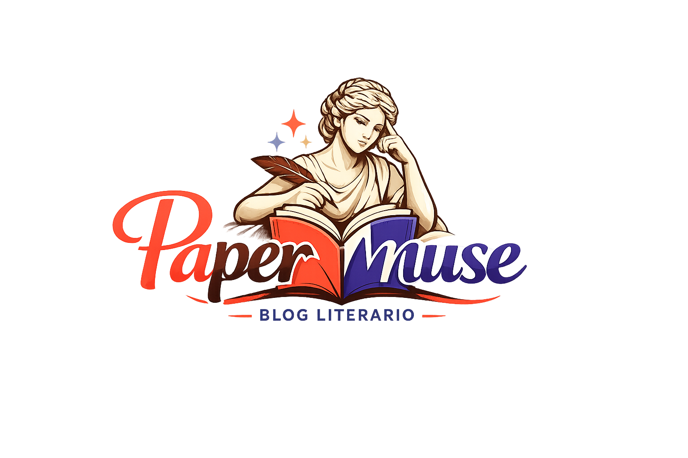
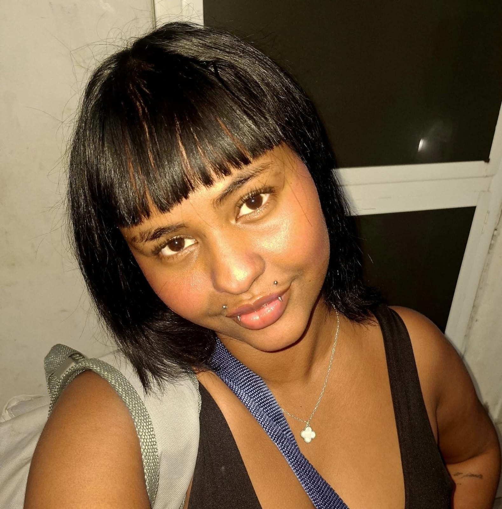

Bem vindos ao meu refúgio literário!
O PaperMuse nasceu como um projeto de um curso de programação, mas acabou amadurecendo e se transformando em um projeto muito mais pessoal, dedicado ao que eu mais gosto de fazer: ler, escrever, recomendar bons livros e acompanhar tudo o que acontece no mundo literário.
Oficialmente concluído em 16/07/2026, este blog não promete ser um manual cheio de técnicas dizendo como você deve escrever o seu livro. Na verdade, a proposta é quase o contrário.
A ideia é construir uma comunidade de leitores e escritores que escrevem por prazer.
Vou compartilhar meus métodos de escrita, as ideias que surgem na minha cabeça, o que me inspira, plataformas interessantes para publicar histórias, livros que gostei e tudo aquilo que faz parte da minha experiência como escritora.
Mas também não espere encontrar alguém que tenha todas as respostas. Eu escrevo há cerca de 12 anos, sempre por paixão e curiosidade, sem nunca me preocupar muito com regras técnicas ou fórmulas prontas para criar um best-seller. Essa é a experiência que eu posso compartilhar com você. Além, é claro, de alguns plots que considero incríveis e de um rostinho bonito.
Então fique à vontade para explorar o blog, acompanhar as atualizações, entrar em contato comigo, recomendar livros para futuras resenhas ou simplesmente passear pelas páginas.
Meu maior objetivo com o PaperMuse é criar uma comunidade literária acolhedora, não competitiva e realmente engajada, onde ler e escrever sejam, antes de qualquer coisa, um prazer compartilhado.
E você pode fazer parte dessa história :) .
SOBRE MIM
Meu nome é Sara Santos. Na verdade, é um pouco mais longo que isso, mas é tudo que você precisa saber. Antigo nome artístico, @unworthily, ou Sara Ketlyn. Nasci em 2005, no primeiro mês e no segundo dia.
Gostaria de dizer que houve um momento da minha vida em que eu descobri que era apaixonada por inventar histórias, personagens, conflitos, mundos e todo esse tipo de coisa, mas a minha vida inteira é esse momento.
Então, vou falar sobre quando eu realmente comecei a escrever, aos 9 anos. Uma idade inapropriada para pertencer à escritora de uma fanfic mal escrita de um anime tão mal escrito e dirigido quanto (High School Of The Dead).
Quase uma década mais tarde, eu teria certeza que qualquer obsessão pequena me faria escrever. Qualquer uma mesmo. Filmes, séries, livros, jogos, personagens que ninguém imaginaria que teriam uma fanfic, ideias e conceitos deformados e transformados em algo que eu pudesse saborear enquanto adquiria uma tendinite que me assombraria pelos próximos anos.
Pois é, são tempos difíceis quando você ainda é uma adolescente criativa sem um notebook e com caderno e caneta que não duram tanto quanto você gostaria.De qualquer maneira, eu escrevia e lia tudo o que eu queria. E, se eu queria ler algo que não existia, eu escrevia.
Mas existe um problema em ser, bom, eu. Você simplesmente não consegue terminar um livro. Acho que é quase impossível isso ser uma experiência única e individual, mas não vejo muitos escritores falando sobre isso. Só no Wattpad (berço da minha primeira fanfic já citada e da maioria das minhas obras), acumulo cerca de 400 rascunhos de ideias e histórias de fato originais e incompletas na minha conta principal.
A secundária conta com mais ou menos 70 fanfics não concluídas, o que eu diria que é até um número baixo pra geração em que eu cresci, onde existem mais fanfics da Selena Gomez com o Faustão ou de algum membro do BTS sendo ômega do que shipps reais.
livro que cheguei mais perto de terminar e que foi meu orgulho durante anos chegou a alcançar 35 mil visualizações. Não é um número assustador**, mas** eram leitores assíduos, que realmente me acompanhavam e interagiam comigo e com a história.
Ele se chamava "NÃO TOQUE NO MEU DIÁRIO" e talvez seja exatamente o que parece apenas para mim que já o conheço: um romance adolescente com problemas bobos e romances mais complicados do que deveriam ser. Ou iniciou assim.
A história cresceu, tomou forma, se modificou e, em algum momento, parecia mais algo realmente meu do que uma ideia inspirada em outro romance adolescente com problemas bobos e romances mais complicados do que já deveriam ser (PARA TODOS OS GAROTOS QUE JÁ AMEI).
Para mim, meu livro deixou de ser uma coisa gerada através de outro algo e passou a ser NÃO TOQUE NO MEU DIÁRIO. É confuso, eu sei. Mas a sensação é indescritível e ininteligível mesmo. E incrível. Pena que esse eu também não terminei.
Bom, o ponto é que eu amo ler e escrever. Faz parte da minha personalidade. E os gêneros para os quais eu produzo e os quais eu consumo são diversos. Me aperfeiçoei em temas mais pesados, como dark romance, thrillers psicológicos, criminais, terror psicológico, terror de folclores, fantasia sombria, entre outros.
As histórias mais soft foram sendo deixadas pra depois, mas não completamente abandonadas. É bom respirar de vez em quando, embora seja engraçado escrever uma briga com uma patricinha irritante depois de descrever um massacre familiar numa noite de aniversário ou uma tentativa de homicídio numa fábrica abandonada.
Atualmente (o que significa pelo menos nos últimos 7 anos), não estou focada em nenhuma obra específica. Mas praticamente toda semana surge um plot novo e super inovador, interessante e com altas possibilidades de sucesso na minha cabeça.
E então eu engreno em mais um projeto que juro não abandonar como todos os outros.
Se isso fosse verdade, eu não estaria escrevendo isso aqui.
Não me leve a mal, não estou tentando me queimar como escritora ou te convencer a não ler meus livros nem nada.
Mas preciso ser sincera. Depois da ideia, planejamento do livro (geralmente inteiro, começo, meio e fim), capa, sinopse, epígrafe, prólogo, escolha de elenco pra imaginação trabalhar melhor e planejar inclusive os livros que viriam depois (acontece mais vezes do que eu gostaria de admitir), eu abandono o que parecia ser o meu projeto da década.
E fico desolada por uns 2 dias, até ter outra ideia inovadora e incrível. Não sei por que faço toda a parte mais difícil e depois a história em si não sai, mas é algo que estou tentando corrigir.
Há alguns meses comecei a pesquisar sobre métodos de escrita para tentar melhorar a maneira como eu faço essa coisa de planejar tudo e não produzir nada.
O único que eu ainda não tentei foi pegar os acontecimentos já estabelecidos ao longo de toda a história e ir criando capítulos em cima deles sem ordem específica ou cronológica, simplesmente ir escrevendo as cenas mais marcantes, ou revoltantes, ou empolgantes e depois uni-las com cenas de conexão entre esses acontecimentos e de descanso da tensão, porque até a fugitiva de um reino em guerra precisa de um banho numa taberna duvidosa na semana.
Eu ainda não concretizei o método. Nem testei, honestamente. Mas estou ansiosa para fazer isso, sinto que pode ser algo que realmente me ajude. O problema é que, mais do que procrastinar, eu AMO planejar as coisas.
Então escrever só o que eu sinto e DEPOIS planejar como cheguei até ali, pensar o que vai ser depois e etc. me mata um pouco. Mas é algo necessário, porque esse ciclo de começar e desistir está me cansando e defasando o meu amor pelas histórias.
Talvez a esse ponto você esteja se perguntando se eu tenho algum livro publicado comercialmente. Ou talvez você tenha prestado atenção de verdade até aqui e saiba que obviamente não, visto que eu nem tenho um livro finalizado para publicar, nem física nem digitalmente.
Mas pensei muito nisso durante muitos anos, até tentei me forçar a escrever para conseguir publicar, mas essa é definitivamente a pior coisa que um escritor pode fazer consigo mesmo.
De qualquer maneira, escrevi em muitas plataformas online e gratuitas pelo simples prazer de dividir minhas histórias com o mundo: Wattpad, Spirit Fanfics, Nyah Fanfiction, Inkspired, WriterTools, entre outros, como também editores de texto comuns sem publicação.
Para finalizar, gostaria de dizer que se você transforma algo que gosta genuinamente de fazer em uma obrigação, o prazer por essa coisa deixa de existir. Mas isso não significa que o amor desaparece.
Eu sempre soube que ser escritor no Brasil não tinha vantagens. Talvez você tivesse sorte se seu livro fosse muito hypado depois de divulgação pesada, ou talvez conseguisse contrato com uma editora que não pegasse TANTO dos seus ganhos, ou talvez ainda você pudesse viver da sua arte como escritor.
E eu não tenho medo de riscos. Mas me obrigar a concluir algo que eu nem poderia gostar para depois publicar de maneira que me deixaria infeliz seria como pisar no meu sonho duas vezes. Então escrever se tornou um hobby. E talvez seja para sempre. Ou talvez um dia eu me torne escritora. Na verdade, isso não importa.
Quero que as pessoas conheçam o meu trabalho, é claro, mas quero principalmente que ENTENDAM e SINTAM ele. E isso eu consigo como fiz durante todos esses anos.
Isso é tudo, até logo! 😊 Espero que a leitura tenha sido interessante para você e que continue acompanhando nosso blog (faça parte dessa comunidade, é grátis!). Para fins de curiosidade, essa aí embaixo sou eu. 😉

Se você chegou até aqui, provavelmente gosta de histórias tanto quanto eu. Então, seja bem-vindo ao PaperMuse!